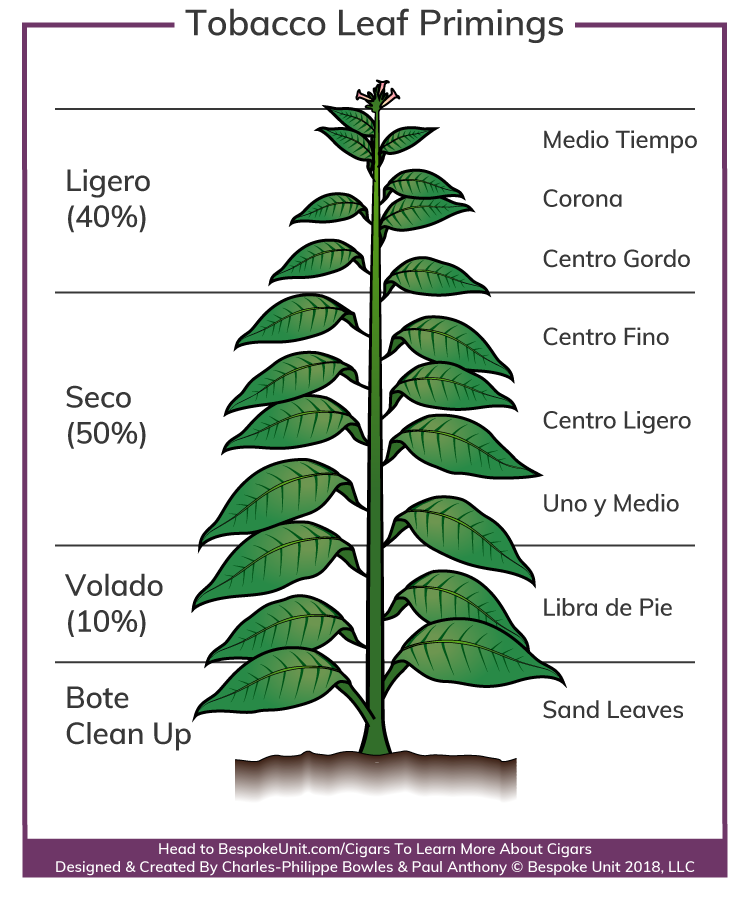
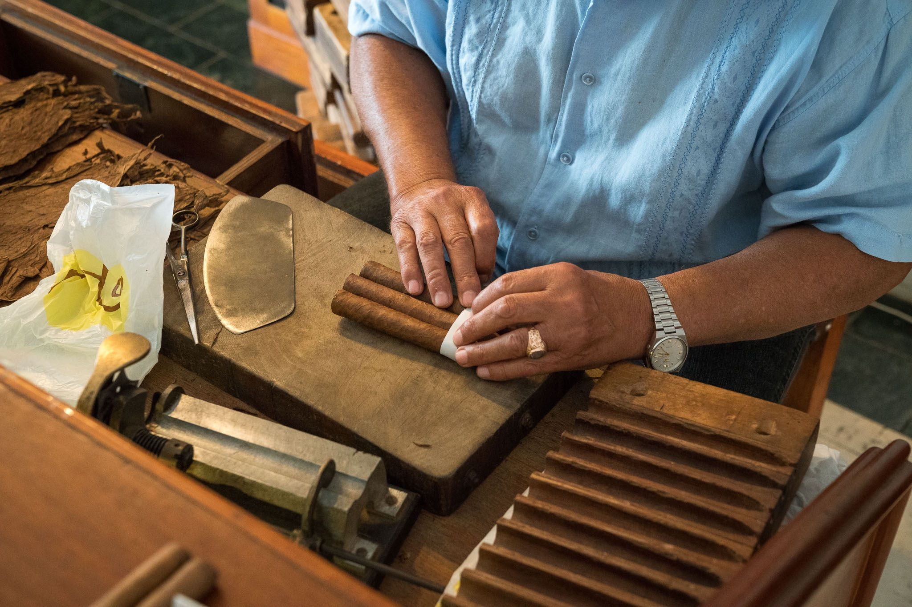
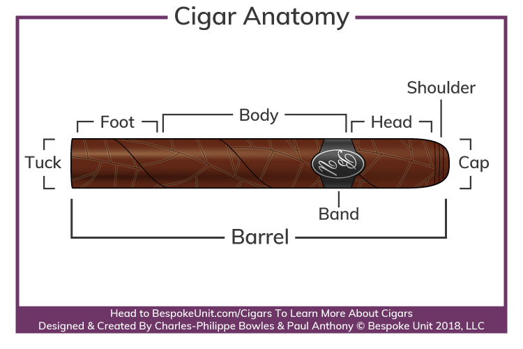

Tobacco
To understand cigars, we must first understand what they are made of. All premium cigars are composed of long filler tobacco, which is derived from the tobacco plant. The tobacco plant is composed of different leaves. These leaves are called the Volado, Seco, and Ligero. The Ligero is on the top of the plant and recieves the most sunlight. Becuase it recieves the most sunlight, it has the strongest flavor. The lower the leaves are on the plant, the more mild the flavor will be.

The farmers will pick the leaves and then hang them in a barn to cure. The leaves will dry and different heating techniques can be used to give the leaves a different color or flavor. In the curing barn, the leaves will be sorted by color and quality.

The leaves will then get rolled into a cigar as we know them today. A skilled roller has years of experience and is highly sought after in their field. Different leaves are used for different parts of the cigar and many countries in the world produce high quality tobacco. The wrapper (the outside leaf of the cigar) gives a cigar 50% to 80% of it's flavor.

The Cigar
After the roller is finished rolling, the cigar becomes a finished product. The cigar is composed of the wrapper, the binder, and the filler. The wrapper, which is the outside leaf of the cigar, is the most robust and flavorful part of the cigar. The binder is the leaf beneath the wrapper that binds the filler leaves together. The filler is the long-filler tobacco that makes up the inside of the cigar.
